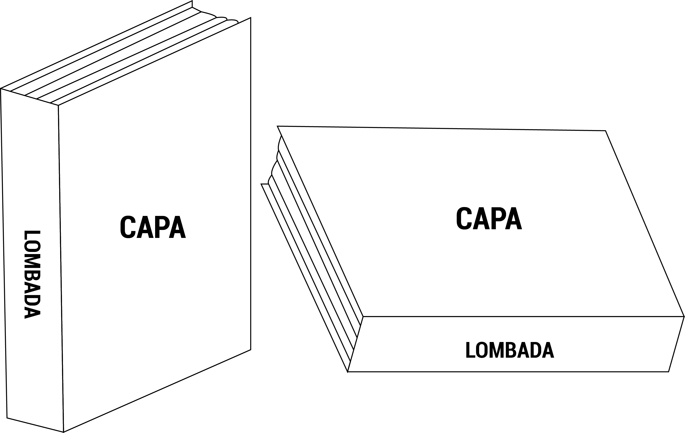

Parte Externa
- Capa(Obrigatório)
- Lombada (opcional)

Elementos Pré-textuais
- Folha de rosto (obrigatório)
- Errata (opcional)
- Folha de aprovação (obrigatório)
- Dedicatória (opcional)
- Agradecimentos (opcional)
- Epígrafe (opcional)
- Resumo em lingua vernácula (obrigatório)
- Resumo em lingua estrangeira (obrigatório)
- Lista de ilustrações (opcional)
- Lista de tabelas (opcional)
- Lista de abreviaturas e siglas (opcional)
- Lista de símbolos (opcional)
- Sumário (obrigatório)
Elementos textuais
- Introdução
- Desenvolvimento (seções e subseções)
- Conclusão
Elementos Pós-textuais
- Referências (obrigatório)
- Glossário (opcional)
- Apêndice (opcional)
- Anexo (opcional)
- Índice (opcional)